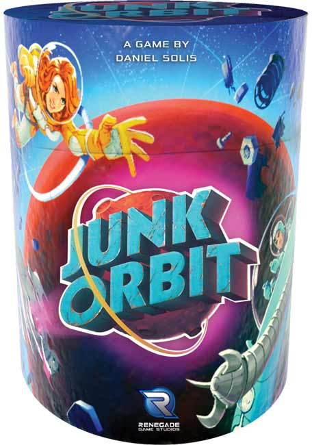
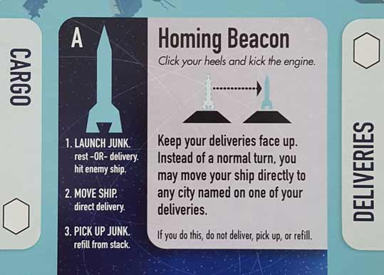
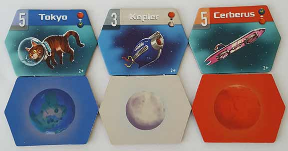
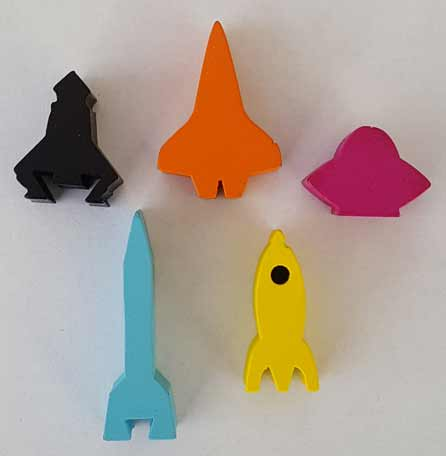
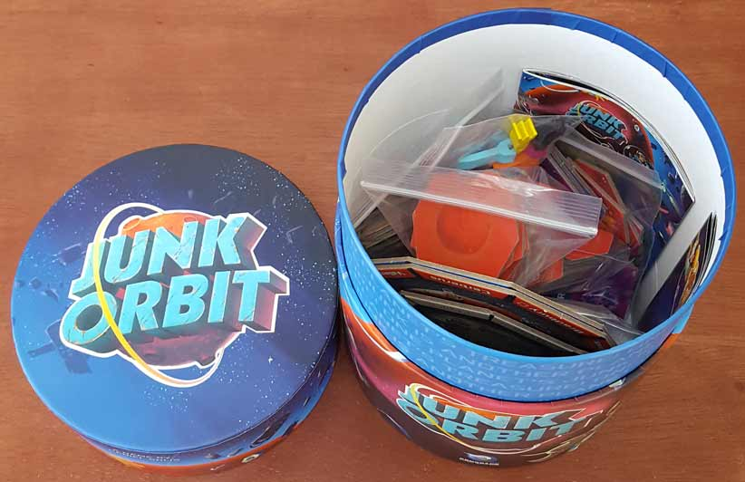
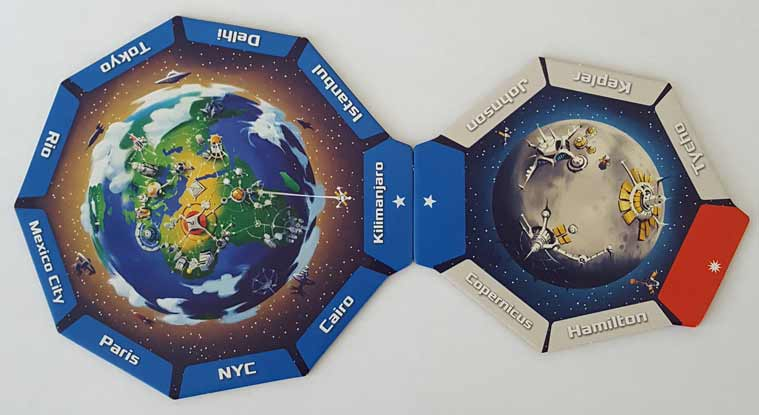
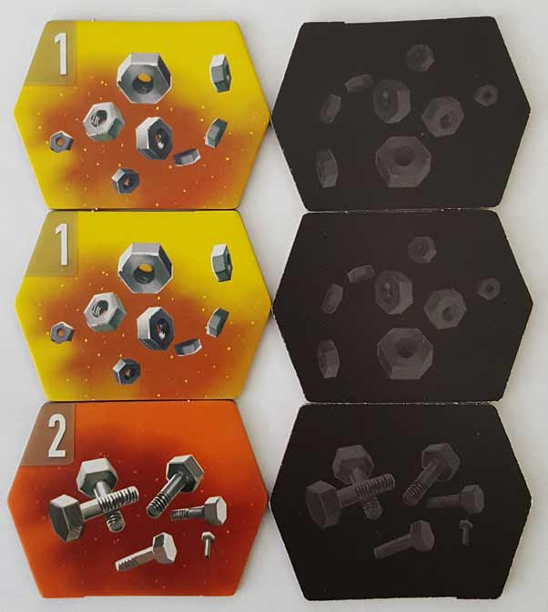
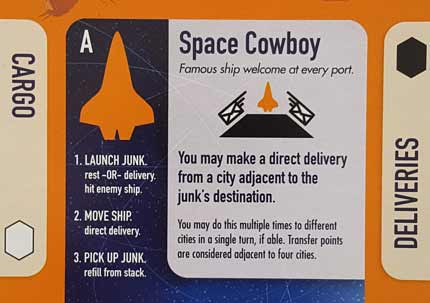
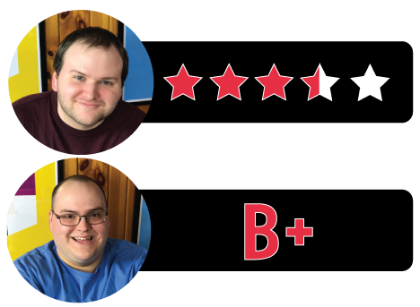

In this Junk Orbit review, D and Will break down the space-themed, pick-up and deliver game from Renegade Game Studios. Designed by Daniel Solis, this game has its players taking on the roles of galactic garbage men as they collect and deposit space junk for victory points. Along the way, players will have to be wary of junk launched their way as well as devious rivals seeking out the same prized trash that they’re after. How well does Junk Orbit execute its theme and gameplay? Continue reading below to find out.

D reviews Junk Orbit
 (Author’s
note: this review is meant to accompany our gameplay video and will not
go in-depth on the game’s rules. If you’re interested in learning how
the game is played, please watch the video. It’s not bad.)
(Author’s
note: this review is meant to accompany our gameplay video and will not
go in-depth on the game’s rules. If you’re interested in learning how
the game is played, please watch the video. It’s not bad.)
I wouldn’t say that Junk Orbit is a game that has a lot of depth – what you see is very much what you get. So, if you’ve watched our video (and if you haven’t, how dare you?), then just consider this a reiteration of what you probably already think. I’m not saying that the game is without strategy or anything like that, but the gameplay – once I understood it – never really surprised me. It did, however, entertain me. Junk Orbit’s shortcomings may hold it back from achieving any level of “greatness”, but I think it’s a worthwhile experience that should appeal to a wide audience.
The main gameplay hook in Junk Orbit is a good one. Scientifically speaking, I’m pretty sure launching garbage into space is unlikely to propel you an equal distance in the opposite direction, especially if you’re in orbit. As a fictional board game mechanic, however, I think it’s pretty neat. It’s simple enough that younger players should have no problem getting a grasp on it, but developing strategies based on where you can move is engaging enough to hold the interest of older and more seasoned players. Another interesting thing Junk Orbit does is allow its players to play it more as a Eurogame or more as an American-style game depending on their preference. The Ameritrash-y option to hit other players with launched junk and cause them to drop a tile is always present, but by default it’s often a more incidental result than a tactical decision. Instead, it’s the double-sided ship cards that provide this flexibility. The A-side ships provide special abilities that exclusively help their player, while the B-sides are more confrontational and usually incentivize hitting opponents with your junk (*cough*). And while I don’t think this is stated in the rulebook, if you want an extremely balanced experience, you can just forego the ship abilities altogether. This option to tailor the game to the preferences of your group is fantastic and maybe Junk Orbit’s finest feature.
Junk Orbit’s production quality is also mostly quite nice. The art on the tiles and the planets/moons is all very bright and cartoon-y, which is a nice break from the usual style you’ll find in space-based games. Everything also feels sturdy and well-made. And I know I always mention this, but I love it when games come with plenty of plastic baggies for their components, and this is no exception. I do have one complaint though, and that is with the box itself. It’s cylindrical in shape, and while it’s certainly attractive and unique, it’s an awkward fit for your average board game shelf. If given the option, I’d have much preferred the usual rectangular shape. But this is a minor gripe; overall this is a finely produced package.
To summarize, Junk Orbit does a lot of things well and very few things poorly. It’s very light and plays pretty quickly, so it’s unlikely to be the main event of a board game night with your friends, but it may be the highlight of the undercard, so to speak. And it should be a hit with families – or just younger children playing together – considering its accessibility and absence of objectionable content. It’s (probably) not going to change your life, but Junk Orbit is a good game and I will gladly give it a recommendation.
D’s Rating: Three and One-Half Stars out of Five.
Will reviews Junk Orbit
 Even though this game is manufactured by a major publisher (Renegade Game Studios), Junk Orbit’s
release was still met with relatively little fanfare. I mean, the only
reason I heard about it is because I write our news columns for the
site, so I try to keep up with all board game releases. I have to say –
the fact that this game hasn’t been more of a hit is depressing to me,
as Junk Orbit is more than worth its price of admission. Once
you get past its silly packaging, you’ll realize it’s fast-paced, mostly
well balanced, and really entertaining in the moment.
Even though this game is manufactured by a major publisher (Renegade Game Studios), Junk Orbit’s
release was still met with relatively little fanfare. I mean, the only
reason I heard about it is because I write our news columns for the
site, so I try to keep up with all board game releases. I have to say –
the fact that this game hasn’t been more of a hit is depressing to me,
as Junk Orbit is more than worth its price of admission. Once
you get past its silly packaging, you’ll realize it’s fast-paced, mostly
well balanced, and really entertaining in the moment.
It’s also engaging to look at, as Junk Orbit’s artwork pops with a menagerie of eye-catching colors. The game’s four artists did a hell of a job creating a visually appealing aesthetic while also conveying the game’s lighthearted, Sci-Fi-ish theme. I especially appreciate that the game’s cards and tiles aren’t crowded with too much detail, something that I’ve seen similar games do. For the most part, the components live up to the artwork’s quality – the ship tokens are wooden and the junk tiles are sturdy and functional. The only negative in regards to this game’s physical attributes is that the game box is cylindrical instead of rectangular. That’s not to say I don’t like it all; I do – the art is striking and everything fits inside with room to spare. I just thing the cylindrical boxing makes it difficult to place Junk Orbit snuggly on a gaming shelf, which will annoy some people. The box is also pretty gimmicky, which implies that the game itself somehow needs help from its packaging to convince people to buy it.
However, the truth is that Junk Orbit easily plays well enough that it never needed gimmicky packaging to begin with. The basic concept, that you launch junk to propel your ship towards more junk and different locations in the Solar System, is rock solid. If anything, the movement system, wherein you eject junk a certain distance in a certain direction and then move the same amount of spaces in the opposite direction, would’ve alone been enough for most people to take notice. Personally, I thought the movement mechanic on its own was enough to justify our purchase. It’s extremely satisfying to play a game that basically allows you to move however and wherever you want to, and this level of freedom generates a corresponding amount of strategy.
Often in Junk Orbit, you’ll find yourself counting spaces and realizing that you have the perfect tile to expend in order to get you where you need to go, only to realize that you may want to hold onto that tile in order to claim its points. Deciding what to do in that instance can be flustering, yes, but it’s also really fulfilling. There’s also a system that allows you to remotely deliver junk by launching it into its target destination. This was another savvy design decision because occasionally, you’ll have a moment where you’ll send junk directly where it needs to go, move, and then direct deliver even more junk. When this happens, the subsequent feeling can only be described as gaming nirvana. This remote delivery system also means that even when you can’t earn points through a direct delivery, there are still opportunities to further your chances of victory. In Junk Orbit, you always feel like you have agency over your choices and ultimate fate, and that’s nearly the highest praise I can give a board game.
When the game ends, you count up all the points on your delivered junk and the player with the highest total wins. There aren’t any bonuses or anything else to add on at this point, which I actually appreciate more than I thought I would. By not having any end game bonuses for say, the person who collected the most junk, the game maintains its simplicity and balance. I bring this up because so many similar games tack on additional ways to score that only come into play at the end, and those bonuses often arbitrarily alter the end result. By not doing this, Junk Orbit makes its core gameplay feel more important than anything else because it is more important. In other words, it makes everything you do in this game feel like it matters.
That’s not to say Junk Orbit is perfect, because it’s definitely not. Each player selects a ship at the beginning of the game, and these ships come with corresponding special powers. For instance, one ship allows you to take two junk tiles of equal value, add them together, and then move that cumulative distance. Abilities like this are all well and good, and I would even go as far as to say completely necessary in this game. But that doesn’t mean they do much for the game’s balance. Some of the ships, particularly the ones that allow you to take/deliver junk from/to adjacent locations are a bit overpowered. Someone with a proper strategy and one of those ships wins more often than not, but then again, there are multiple ships to choose from. If these ships cause you similar problems, then you can always just play with some of the other options instead.
At the same time, if you remove certain ships from play, that hurts replayability. And replayability is something this game struggles with somewhat. We’ve played Junk Orbit a handful of times and I can already tell that we’re repeating strategies and having similar endgame results. Don’t get me wrong, I still enjoy playing this game, but I can see the writing on the wall. The more you play Junk Orbit, the less special it becomes. It’s a really good game, but I don’t recommend playing it too often. Mixing it into some kind of rotation of board games would probably be best.
All in all, I was and still am shocked by how much of a hit Junk Orbit was at our table. The gimmicky packaging probably contributed to my surprise, given that it doesn’t do the game any favors. But don’t let the box fool you, the gameplay is really fun and fast-paced, and it’s extremely satisfying most of the time. There are advanced rules as well, which add to the experience even more. Also, the artwork and components are terrific, which falls in line with most Renegade Game Studios products. Junk Orbit isn’t an expensive game by any means, so if you like what you’ve heard, then maybe give it a shot. It’s way better than any of us expected it to be, and I’m sure that others who’ve played it feel the same.
I give Junk Orbit a: B+
Junk Orbit – Board Crazy’s Ratings

Leave a Reply
You must be logged in to post a comment.